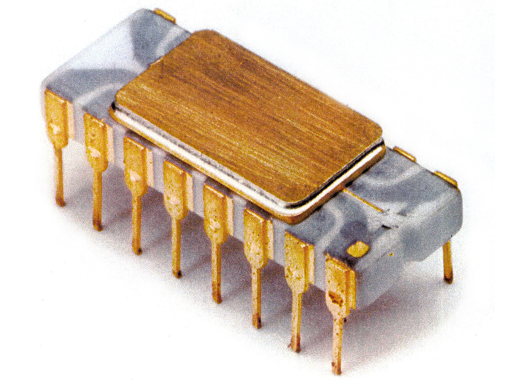
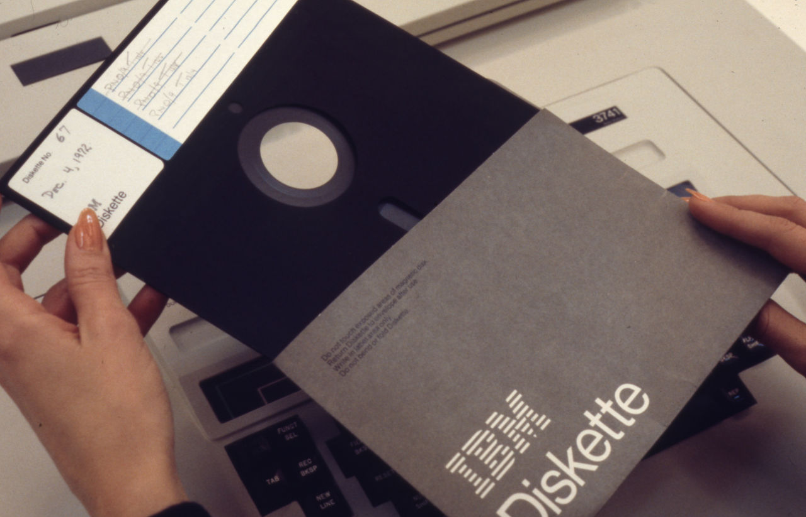
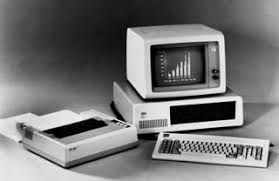
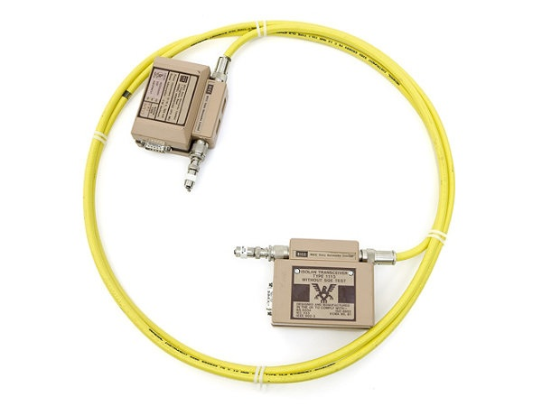

◆ The Birth of Personal Computing ◆
The microprocessor put an entire computer on a single chip. What once required a room and a team of engineers could now sit on a desk. The dream of a personal computer was becoming real.
The Microprocessor Revolution
The defining invention of the 1970s was the microprocessor — a single chip containing all the core components of a computer's central processing unit. Intel's 4004, released in 1971, was the first commercially available microprocessor. It had 2,300 transistors and ran at 740 kHz.
This single invention sparked the personal computer revolution. Companies like Apple, Commodore, and Radio Shack began selling computers directly to the public. By the end of the decade, computing was no longer limited to governments and corporations.
Intel 4004 (1971) — The world's first commercial microprocessor. 2,300 transistors on a chip smaller than a thumbnail.
Altair 8800 (1975) — A kit computer that sparked the hobbyist computing movement. Bill Gates and Paul Allen wrote software for it — founding Microsoft.
Apple II (1977) — One of the first mass-produced personal computers, with color graphics and a keyboard.
Floppy Disk (1971) — IBM introduced the 8-inch floppy disk as a portable storage medium — a revolution for sharing data.
Key Events
Technology of the 1970s



